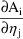
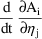
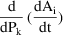

...
...
With general non-linear models ADVAN6, ADVAN8, ADVAN9, ADVAN13, ADVAN14, and ADVAN16, and ADVAN18 a DES subroutine is needed.
SUBROUTINE DES (A,P,T,DADT,IR,DA,DP,DT) DIMENSION :: A(*),P(*),DADT(*),DA(IR,*),DP(IR,*),DT(*)
If DES sets IDEFD(2)=1, the arrays are full.
As explained in Chapter VI Section C,
The partial of DADT(i) wrt A(k)
is stored in DA(i,k).
The partial of DADT(i) wrt P(k) is stored in DP(i,k).
The partial of DADT(i) wrt T is stored in DT(i).
These arguments are used by PREDPP subroutines such as FCN1 as follows.
The state vector consists of compartment amounts and their eta partials  .
The ADVAN routines must integrate over time t both of the following, for each compartment i and eta j:
and 
The latter is not known to PREDPP, but can be computed by changing the order of differentiation:
=
The total derivative can be obtained by the chain rule by adding the sum over all compartments and parameters and time T
... + .nr 0C 0 ... + .nr 0C 0
But is simply DA(i,k) and  is DP(i,k) and is DT(i).
The derivative can thus be computed as the sum of quantities that are available to the FCN routine:
...
...
This can be extended easily to second derivatives.
Note:
|
(1) |
For every PK parameter (i.e., every variable defined in PK and used in DES) there is a loop over all the etas. If a given PK parameter does not have partials with respect to etas, the loop does a lot of multiplying by zero’s and adding of zero’s. This wastes time. It is better simply to define it in $DES. | |
|
(2) |
There is no third dimension of DA or DP or DT for the second partials (e.g., partials of DADT with respect to A(k),A(n)), or cross-partials (e.g., partials of DADT with respect to A(k),P(n)). Therefore the Laplacian method cannot be used with the FULL arrays, | |
|
(3) |
FCN1 always loops over all elements of DA(i,j), DP(i,j) and DT(i). With a large sparse system of differential equations, many of these elements are zero because they are never computed by DES. With compact arrays (below), the elements that are always zero are not included in the computation. |
If DES sets IDEFD(2)=0, the
arrays are compact. (This is the default). FCN1 uses only
those derivatives that are actually computed by DES.†
----------
†Some derivatives
may happen to be zero for some values of A’s and
P’s and etas, but presumably they are non-zero at
other values.
----------
In addition, second partials (Laplace method) can be computed by DES.
DES computes all first and second partials and cross-partials of DADT. These may include (for all compartments and parameters defined in the model):
In DA:
the first partials of DADT(i) wrt A(j)
the second partials of DADT(i) wrt A(j) A(k)
the cross partials of DADT(i) wrt A(j) P(k)
In DP:
the first partials of DADT(i) wrt P(j)
the second partials of DADT(i) wrt P(j) P(k)
In DT:
the first partials of DADT(i) wrt T
the second partials of DADT(i) wrt T T
the cross partials of DADT(i) wrt T A(j)
the cross partials of DADT(i) wrt T P(j)
At ICALL=1, DES uses the first row DA(*,1) to describe each position in DA that will contain a value and describes ("maps") which A and eta it corresponds to (and which P, in the case of second partials). At other values of ICALL, DES puts the values themselves in DA(*,1). Similarly for DP and DT. Thus DA, DP, DT are linear (e.g., only the first row DA(*,1) is used for both the ICALL=1 "map" and the ICALL=2 value.)
The mapping uses two constants:
PG=max. no. of basic and additional PK parameters); may be
set by $SIZES PG
PC=max. no. of compartments + 1; may be set by $SIZES PC
From these are computed
MM=MAX(100,PC-1+PG+10)
MMSQ=MM*MM
For DA, the mapping is in position p is:
DA(p,1)=DA(i*MMSQ+j*MM+k,1)
Where:
i tells which DADT(i)
j tells which A(j)
k=0 if this is a first partial. k>0 if this is a second
partial.
if k < PC, k tells which A(k)
if k > PC, k tells which P(n), where n=k-PC.
Position p in DA will be used to store the value at ICALL=2
The DA values are terminated by DA(..)=0
Similarly for partials of DADT(i) wrt P:
DP(i*MMSQ+j*MM+k,1)
Where
j tells which P(j)
k=0 if this is a first partial. k>0 if this is a second
partial.
if k > 0, k tells which P(k)
Similarly for partials of DADT(i) wrt T:
DT(i*MMSQ+k,1)
Where
k=0 if this is a first partial. k>0 if this is a second
partial.
if 0< k < PC, this is partial wrt T, A(k)
if k > PC and k < PC+PG, this is partial wrt T, P(n)
where n=k-PC
if k = PC+PG+1, this is second partial wrt T T
An example is given as app4example.ctl. This is not a realistic model, but serves to demonstrate the mapping. The only differential equation is:
DADT(1)=-T*T*A(1)*A(2)*P(1)*P(2)
The example contains contains
$SIZES PC=5 PG=10
Then MM=100 and MMSQ=10000 and the mapping given by the right sides can be read easily.
For DA, right sides have the
form 00i0j0k.
The DA values in DES at ICALL=1 are:
DA( 1,1)=0010100
DA( 2,1)=0010200
DA( 3,1)=0010201
DA( 4,1)=0010102
DA( 5,1)=0010106
DA( 6,1)=0010107
DA( 7,1)=0010206
DA( 8,1)=0010207
1st partial of DADT(1) wrt A(1) will be stored in DA(1,1)
1st partial of DADT(1) wrt A(2) will be stored in DA(2,1)
2nd partial of DADT(1) wrt A(2) A(1) will be stored in DA(3,1)
2nd partial of DADT(1) wrt A(1) A(2) will be stored in DA(4,1)
2nd partial of DADT(1) wrt A(1) P(1) will be stored in DA(5,1)
2nd partial of DADT(1) wrt A(1) P(2) will be stored in DA(6,1)
2nd partial of DADT(1) wrt A(2) P(1) will be stored in DA(7,1)
2nd partial of DADT(1) wrt A(2) P(2) will be stored in DA(8,1)
For DP, right sides have the
form 00i0j0k.
The DP values in DES at ICALL=1 are:
DP( 1,1)=0010100
DP( 2,1)=0010200
DP( 3,1)=0010201
DP( 4,1)=0010102
DP( 5,1)=0
1st partial of DADT(1) wrt P(1) will be stored in DP(1,1)
1st partial of DADT(1) wrt P(2) will be stored in DP(2,1)
2nd partial of DADT(1) wrt P(2) P(1) will be stored in DP(3,1)
2nd partial of DADT(1) wrt P(1) P(2) will be stored in DP(4,1)
For DT, right sides have the
form: 00i000k
The DT values in DES at ICALL=1 are:
DT( 1)=0010000
DT( 2)=0010001
DT( 3)=0010002
DT( 4)=0010016
DT( 5)=0010006
DT( 6)=0010007
DT( 7)=0
1st partial of DADT(1) wrt T will be stored in DT(1)
2nd partial of DADT(1) wrt T A(1) will be stored in DT(2)
2nd partial of DADT(1) wrt T A(2) will be stored in DT(3)
2nd partial of DADT(1) wrt T T will be stored in DT(4)
2nd partial of DADT(1) wrt T P(1) will be stored in DT(5)
2nd partial of DADT(1) wrt T P(2) will be stored in DT(6)
Here is the app4example.ctl:
$SIZES PC=5 PG=10 $PROB DEMONSTRATE COMPACT DES MAPPING $INPUT ID DOSE=AMT TIME CP=DV WT $DATA THEOPP RECS=1 $SUBROUTINES ADVAN6 TOL=5 $MODEL NCM=2 $PK P(1)=THETA(1)*EXP(ETA(1)) P(2)=THETA(2)*EXP(ETA(2))
$DES
DADT(1)=-T*T*A(1)*A(2)*P(1)*P(2)
$ERROR
Y=F+EPS(1)
$THETA 1 2 $OMEGA 1 2 $SIGMA 1